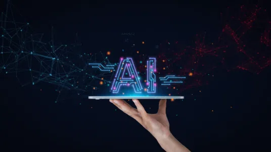

Design Visceral
Acreditamos que a estética e a funcionalidade devem caminhar juntas para criar interfaces que respiram clareza.

Bem-vindo ao Pulse Blog
Explore os bastidores do Pulse: um projeto dedicado a entender como o design de ponta e o desenvolvimento ágil moldam os produtos digitais de amanhã.

Sobre o Projeto
Mais do que um site, o Pulse é um laboratório de conteúdo focado em três pilares fundamentais para o sucesso digital.
Acreditamos que a estética e a funcionalidade devem caminhar juntas para criar interfaces que respiram clareza.
Exploramos ferramentas modernas e arquiteturas leves (como este blog estático) para entregar velocidade e segurança.
Documentamos a jornada de transformar ideias brutas em sistemas que funcionam em escala e com eficiência.
Conteúdo